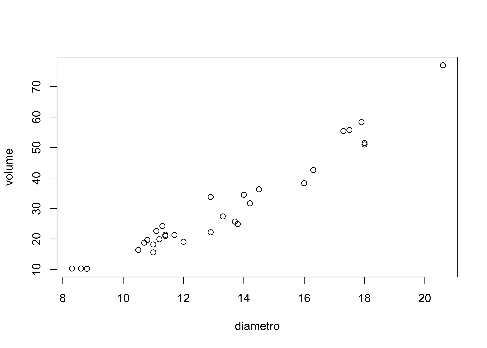
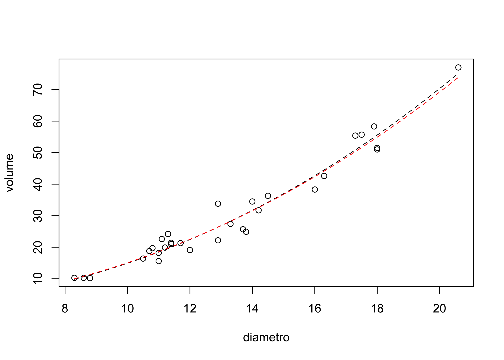

ciliegi <- read.table("../dataset/ciliegi.csv", header = TRUE, sep = ",")R per l’analisi statistica multivariata
Unità L: regressione non lineare
Argomenti affrontati
- Modelli linearizzabili
- Minimi quadrati non lineari
- Gli alberi di ciliegio nero
Descrizione del problema
Per n = 31 alberi di ciliegio nero sono disponibili le misure del diametro del tronco (misurato a circa 1m dal suolo) ed il volume ricavato dall’albero dopo l’abbattimento.
Si vogliono utilizzare i dati per ottenere un’equazione che permetta di prevedere il volume, ottenibile solo dopo l’abbattimento dell’albero, avendo a disposizione il diametro, che è invece facilmente misurabile.
In altri termini, stiamo cercando una qualche funzione f(\cdot) tale che
\text{(volume)} \approx f(\text{diametro}).
Una simile equazione ha differenti utilizzi.
Ad esempio, può essere utilizzata per decidere quanti e quali alberi tagliare per ricavare un certo ammontare di legno, oppure per determinare il “prezzo” di un bosco.
Importazione dei dati ciliegi
Come fatto in precedenza, anzitutto è necessario scaricare il file ciliegi.csv e salvarlo nel proprio computer. Link al file
In alternativa, possiamo semplice ottenerli usando il link:
path <- "https://tommasorigon.github.io/introR/dataset/ciliegi.csv"
ciliegi <- read.table(path, header = TRUE, sep = ",")head(ciliegi) diametro volume
1 8.3 10.3
2 8.6 10.3
3 8.8 10.2
4 10.5 16.4
5 10.7 18.8
6 10.8 19.7Diagramma a dispersione
plot(ciliegi)
Alcune considerazioni geometriche (recap)
Nelle Unità K ed Unità L del corso Statistica I abbiamo costruito dei modelli statistici del tipo \text{(volume)} \approx f(\text{diametro}) basati sulla geometria degli alberi.
Dopo varie considerazioni di tipo geometrico, si era giunti ad una specificazione del tipo \text{(volume)} = \eta \:\text{(diametro)}^{\lambda}, per due costanti positive \eta, \lambda > 0.
Potremmo determinare i valori appropriati per \eta e \lambda utilizzando i minimi quadrati, ovvero considerando (\hat{\eta}_{\text{ls}}, \hat{\lambda}_{\text{ls}}) = \arg\min_{\eta, \lambda} \frac{1}{n} \sum_{i=1}^n\left(y_i - \eta x_i^\lambda\right)^2.
Purtroppo non esiste una soluzione in forma chiusa a questo problema, che infatti necessita dell’utilizzo di tecniche numeriche.
Minimi quadrati non-lineari
La procedura di stima per (\hat{\eta}_{\text{ls}}, \hat{\lambda}_{\text{ls}}) prende il nome di minimi quadrati non-lineari e richiede una minimizzazione numerica, come quelle che abbiamo visto nell’Unità K.
Grazie ad R ed ai suoi strumenti computazionali, possiamo quindi svolgere un calcolo che nei corsi precedenti non era risolvibile. In particolare, possiamo usare nlminb.
In primo luogo, definiamo la funzione obiettivo o funzione di perdita:
# Funzione di perdita che vogliamo minimizzare
loss <- function(par, y, x) {
mean((y - par[1] * x^par[2])^2)
}Ad esempio, tale funzione, valutata nel punto (1,1) vale circa 460.83, infatti:
loss(c(1, 1), ciliegi$volume, ciliegi$diametro)[1] 460.8329Stima ai minimi quadrati
La stima ai minimi quadrati si ottiene quindi usando nlminb. In questo caso, siamo effettivamente interessati a minimizzare una funzione.
fit_ls <- nlminb(start = c(1, 1), function(param) loss(param, ciliegi$volume, ciliegi$diametro),
lower = c(1e-6, 1e-6))
fit_ls$par
[1] 0.08661007 2.23638534
$objective
[1] 10.12108
$convergence
[1] 0
$iterations
[1] 27
$evaluations
function gradient
41 61
$message
[1] "relative convergence (4)"# Salvo i risultati
param_hat_ls <- fit_ls$par
param_hat_ls[1] 0.08661007 2.23638534Commenti ai risultati
I comandi precedenti quindi implicano che la stima ai minimi quadrati (non lineari) è pari a \hat{\eta}_{\text{ls}} = 0.0866, \qquad \hat{\lambda}_{\text{ls}} = 2.2364.
Inoltre, la varianza residuale è pari a \frac{1}{n} \sum_{i=1}^n\left(y_i - \hat{\eta}_{\text{ls}} x_i^{\hat{\lambda}_{\text{ls}}}\right)^2 = 10.121.
Infatti:
fit_ls$objective[1] 10.12108Come ricorderete, questo problema di stima può essere affrontato alternativamente tramite la procedura di linearizzazione del modello.
Supponendo che la relazione sia del tipo \text{(volume)} = \eta \:\text{(diametro)}^{\lambda}, allora applicando la funzione \log ambo i lati, si ottiene \log{\text{(volume)}} = \log{\eta} + \lambda\log{\text{(diametro)}}.
Quindi, la relazione non lineare che abbiamo supposto tra diametro e volume corrisponde ad una relazione lineare tra i logaritmi delle due variabili.
Il modello linearizzato
La relazione in scala logaritmica descrive un modello linearizzato. Si tratta di un modello di regressione lineare semplice in cui z_i = \log y_i, \qquad w_i = \log{x_i}, \qquad i=1,\dots,n.
Introducendo esplicitamente il termine di errore, avremo quindi che z_i = \alpha + \beta w_i + \epsilon_i in cui \alpha = \log \eta e \beta = \lambda.
Possiamo determinare i parametri trasformati ottimali \hat{\alpha} e \hat{\beta} ed i parametri originali \hat{\eta}_{\text{ols}} ed \hat{\lambda}_{\text{ols}} utilizzando il criterio dei minimi quadrati sulla scala trasformata, ovvero \min_{\alpha, \beta} \frac{1}{n} \sum_{i=1}^n\left(z_i - \alpha - \beta w_i \right)^2 = \min_{\eta, \lambda} \frac{1}{n} \sum_{i=1}^n\left(\log{y_i} - \log{\eta} - \lambda \log{x_i} \right)^2.
Varrà quindi la relazione \hat{\eta}_{\text{ols}} = \exp\{\hat{\alpha}\} e che \hat{\lambda}_{\text{ols}} = \hat{\beta}.
Stima ai minimi quadrati (modello linearizzato)
La stima ai minimi quadrati in scala trasformata ammette una soluzione esplicita.
z <- log(ciliegi$volume)
w <- log(ciliegi$diametro)
beta_hat_ols <- cov(w, z) / var(w)
alpha_hat_ols <- mean(z) - mean(w) * beta_hat_ols
# Stima ai minimi quadrati, scala trasformata
param_hat_ols <- c(exp(alpha_hat_ols), beta_hat_ols)
param_hat_ols[1] 0.09505259 2.19996993# Varianza residuale
loss(param_hat_ols, ciliegi$volume, ciliegi$diametro)[1] 10.2531I comandi precedenti quindi implicano che la stima ai minimi quadrati (modello linearizzato) è pari a \hat{\eta}_{\text{ols}} = 0.095, \qquad \hat{\lambda}_{\text{ols}} = 2.200.
Inoltre, la varianza residuale n^{-1} \sum_{i=1}^n(y_i - \hat{\eta}_{\text{ols}} x_i^{\hat{\lambda}_{\text{ols}}})^2 = 10.253 è superiore a quella ottenuta in precedenza ({come mai?), anche se di poco.
Confronto tra modelli
plot(ciliegi)
curve(param_hat_ls[1] * x^param_hat_ls[2],
add = TRUE, lty = "dashed") # Stime numeriche non-lineari
curve(param_hat_ols[1] * x^param_hat_ols[2],
add = TRUE, lty = "dashed", col = "red") # Modello linearizzato
Commenti conclusivi
I due approcci sono sostanzialmente equivalenti in questo specifico esempio, nel senso che producono risultati quasi indistinguibili.
Si noti che il modello è lo stesso, abbiamo solo cambiato metodo di stima!
Tuttavia, in generale non è detto che sia possibile linearizzare il modello originale. In questi casi, non esiste un’alternativa semplice.
Infine, a seconda della funzione di perdita utilizzata, due diversi metodi di stima potrebbero differire di molto nonostante il modello sia lo stesso.
Ad esempio, alcuni stimatori sono più robusti di altri rispetto alla presenza di valori anomali.